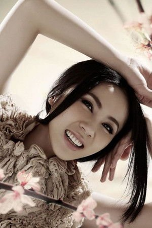

TV SERIES / 宫廷历史剧
后宫·甄嬛传 · 郑晓龙执导宫廷巨制
改编自流潋紫同名小说的古装宫廷剧，由郑晓龙执导、孙俪领衔。它用一个少女从天真选秀到深宫孤后的命运沉浮，把「宫斗」拍成了关于权力、人性与 survival 的恢弘史诗。豆瓣 9.4，堪称国产剧的「宫斗天花板」。
架空的大周王朝，少女甄嬛因「容貌酷似纯元皇后」被选入宫。起初她只想安然度日、不争不抢，却在一次次陷害与失去中逐渐被逼出手。从天真闺秀到冷酷的熹贵妃，她周旋于华妃的骄横、皇后的伪善、果郡王的深情与皇帝的猜忌之间，亲手把一个个对手送入绝境。
它不只是一个「谁赢谁输」的后宫故事，更是一幅权力如何异化人心的长卷：每个人都曾善良，又都在规则里变得凉薄。甄嬛最终坐上高位，却也失去了爱情、孩子与最初的自己。剧集以极其考究的服化道、绵密的台词与细腻的表演，把宫廷生存写成了令人脊背发凉的人性寓言。
愿得一心人，白首不相离。
— 甄嬛入宫之初对感情的憧憬，终其一生都未能实现，是全剧最大的反讽与悲剧底色。
主要角色对应真实演员照片如下；蔡少芬、蒋欣、李东学、斓曦、蓝盈莹的公开肖像受版权限制，此处以姓名首字占位。

孙俪
从天真选秀少女到冷酷熹太后的女主角，全剧灵魂人物，层次最复杂的角色。
陈建斌
多疑而孤傲的帝王，对甄嬛既爱又忌，是权力异化最彻底的象征。
蔡少芬
表面贤德、实则狠辣的后宫之主，伪善的巅峰，甄嬛最大的对手之一。
蒋欣
骄纵张扬、恃宠而骄，实则被皇帝用「欢宜香」暗中绝育，悲情又锋利。
李东学
温润深情、超然权争的皇子，甄嬛一生挚爱，却难逃政治牺牲。
斓曦
甄嬛的闺中密友，端庄刚烈，是后宫里少有的真性情与忠诚。
蓝盈莹
甄嬛同父异母的妹妹，身份夹缝中求存，命运令人唏嘘。
| 篇章 | 大致集数 | 核心转折 |
|---|---|---|
| 入宫 · 初承宠 | 1–20 | 选秀入宫、避宠到得宠，与沈眉庄结盟 |
| 失势 · 离宫修行 | 21–40 | 误穿纯元故衣失宠，出宫于甘露寺，与果郡王相恋 |
| 回宫 · 黑化复仇 | 41–60 | 设计回宫，借腹生子，一步步清算华妃与皇后 |
| 权倾 · 熹贵妃 | 61–70 | 铲除对手、扶持亲信，登上权力顶端 |
| 终局 · 孤后 | 71–76 | 果郡王赐死，皇帝疑心，大权在握却众叛亲离 |
地方台首播，开启第一轮热议。
东方卫视上星首播，全国范围内爆红。
横扫各大颁奖礼，成为年度剧王。
登陆 Netflix，成为首部付费上线的中国内地剧集。
多年长尾重播，豆瓣评分稳定在 9.4，被奉为「宫斗天花板」。